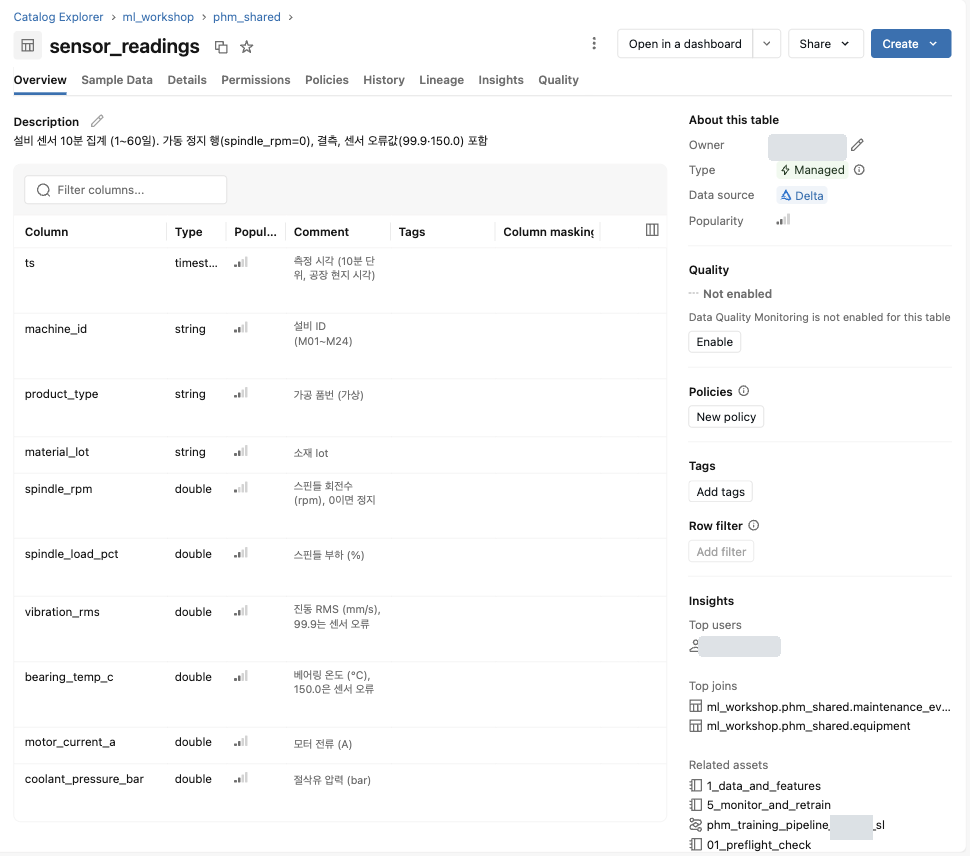

1) 데이터 확인과 피처¶
설비보전팀의 요청을 받은 ML팀은 먼저 데이터에 고장 전조가 정말 보이는지 확인하고, 모델이 학습할 피처 테이블을 만듭니다.
1단계 - 원천 데이터 둘러보기¶
- 왼쪽 사이드바 Catalog →
mlops_edu_dev→phm_shared를 펼칩니다. -
sensor_readings를 누르고 Overview에서 컬럼 설명을, Sample data에서 실제 값을 확인합니다.
-
노트북
step1/1_data_and_features를 열고 위젯 내 스키마에 본인 이름을 입력합니다. - 셀 1-1까지 실행합니다(셀 왼쪽 ▶ 또는
Shift+Enter).
데이터 품질 셀 결과가 아래와 같으면 정상입니다.
| total_rows | stopped_rows | vibration_null | vibration_error_99_9 | temp_error_150 |
|---|---|---|---|---|
| 207,360 | 21,575 | 1,087 | 225 | 204 |
센서 오류값
진동 99.9, 온도 150.0은 센서가 포화된 오류 코드입니다. 정지 중인 행(spindle_rpm = 0)과 함께 피처를 만들 때 걸러 냅니다.
2단계 - 고장 전 센서 변화 보기¶
- 셀 1-2를 실행합니다. 고장 유형별 건수와 평균 정지 시간이 나옵니다.
- 이어지는 두 셀이 베어링 마모와 불균형 고장 직전 72시간의 센서 그래프를 그립니다. 빨간 영역이 고장 전 24시간입니다.
관찰해 보세요
- 베어링 마모: 며칠에 걸쳐 진동과 온도가 서서히 오릅니다.
- 불균형: 마지막 1~2일에 진동이 급하게 오릅니다.
- 설비마다 평소 수준이 달라서, 원시값 하나로는 "평소보다 높은지" 판단하기 어렵습니다.
3단계 - 피처 테이블 만들기¶
- 셀 1-3을 실행합니다. 피처 계산 로직은 노트북이 아니라 같은 폴더의
phm_features.py모듈에 있습니다. - 셀 1-4로 결과를 확인합니다.
| rows | positive_pct | machines |
|---|---|---|
| 185,785 | 5.91 | 24 |
4단계 - Unity Catalog 피처 테이블 확인하기¶
save_feature_table()이 phm_features에 기본키 (machine_id, ts) 를 붙였습니다. Unity Catalog에서는 기본키가 있는 Delta 테이블이 곧 피처 테이블입니다.
- Catalog →
<내 스키마>→phm_features를 엽니다. Overview의 컬럼 목록에서machine_id·ts에 기본키 표시가 있는지 봅니다. - 왼쪽 사이드바 Features(피처 화면)에서 내 피처 테이블을 찾아봅니다. 어떤 모델이 이 피처를 썼는지 계보(lineage)도 여기서 봅니다.
| 방식 | 언제 | 오늘 |
|---|---|---|
| Feature Views (새 프로젝트에 권장) | 피처를 선언하면 Databricks가 피처 파이프라인을 만들고 관리. 시간 창 집계·스트리밍 피처 | 설명만 |
| 피처 테이블 | 피처 값을 직접 Delta 테이블에 쓰고, 파이프라인을 직접 관리. Delta Sharing·외부 온라인 스토어가 필요할 때 | ✅ phm_features |
| Online Feature Store | 실시간 서빙용 저장소(Lakebase 기반). 엔드포인트가 피처를 자동 조회 | 설명만 |
시계열 키(TIMESERIES)를 붙이지 않은 이유
ts가 TIMESTAMP_NTZ 형식이라 시계열 키로 지정할 수 없습니다. 오늘은 시점 조회(point-in-time join)를 쓰지 않으므로 일반 기본키로 둡니다. 시점 조회가 필요하면 TIMESTAMP 형식 컬럼으로 만들고 PRIMARY KEY (machine_id, ts TIMESERIES)로 지정합니다.
Genie Code로 해 보기 · 피처 코드 설명
Genie Code로 해 보기 · 피처 분포 비교
코드 이해하기¶
| 피처 | 뜻 |
|---|---|
vib_mean_6h, temp_mean_24h … |
같은 설비의 최근 6시간·24시간 평균 (Window.rangeBetween) |
vib_std_6h … |
최근 6시간 흔들림 정도 |
vib_rel_7d … |
최근 6시간 평균 − 7일 평균: 이 설비가 평소보다 얼마나 높은가 |
vib_trend_24h … |
최근 6시간 평균 − 24시간 평균: 지금 올라가는 중인가 |
hours_since_maint |
마지막 고장·예방정비 후 지난 시간 |
fail_within_24h |
라벨. 24시간 안에 고장이 있으면 1 (정비 이력과 조인해서 만듦) |
왜 모듈로 분리했나요? (ML Engineer 심화)
같은 phm_features.py를 Step 3의 Job 태스크, Step 5의 재학습, Step 4 엣지 앱의 피처 계산(edge_features.py, 같은 정의)에서 그대로 씁니다. 학습할 때와 판정할 때 피처가 달라지는 문제를 막는 가장 단순한 방법입니다.
Step 1 완료
UC 피처 테이블 mlops_edu_dev.<내 스키마>.phm_features가 만들어졌습니다. 2) 모델 실험과 등록으로 이동합니다.